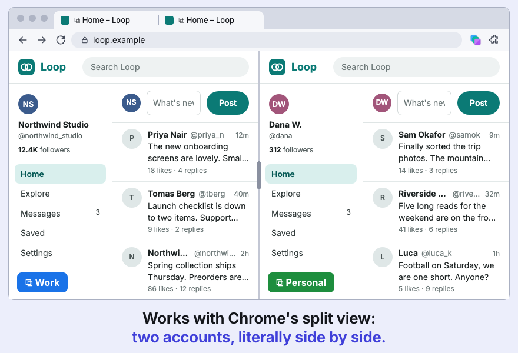
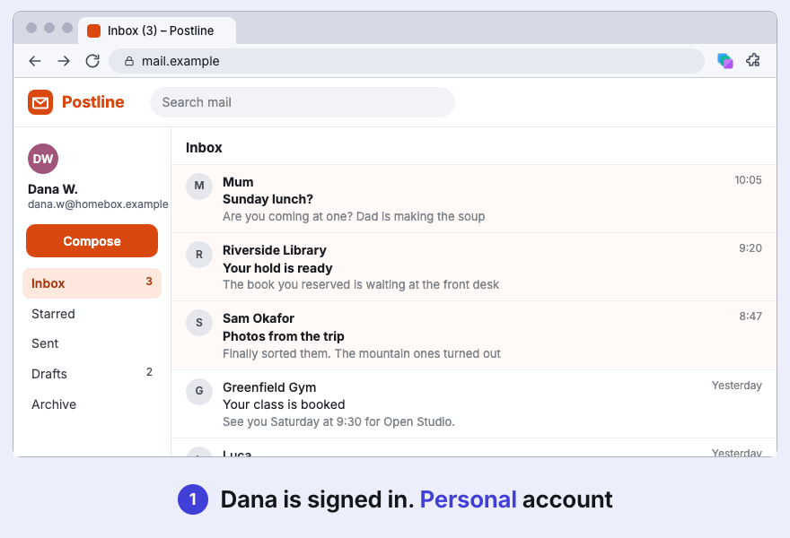
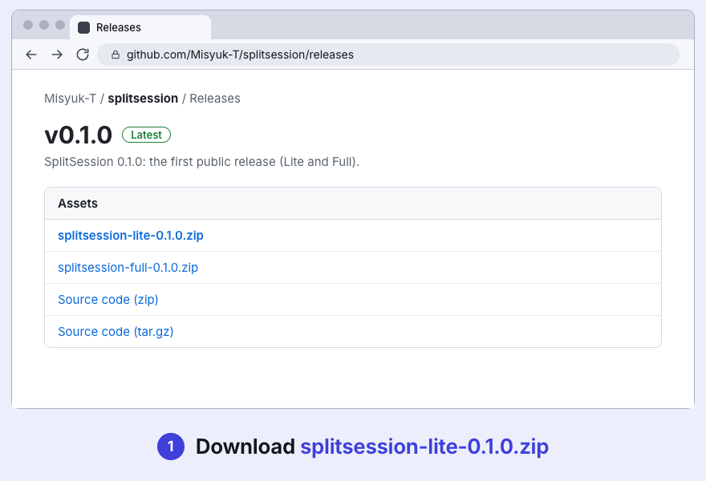

— Chrome extension
SplitSession
Same site. Separate logins.
Works like Firefox containers: several accounts of one site stay signed in at once, in different tabs of one profile.
Download GitHub Chrome Web Store: not yet
Version 0.1, beta. Free, MIT licence.

What it does
- ContainersA name, a colour and a cookie jar each. Export and import as JSON; cookies stay out unless you tick the box.
- IsolationCookies,
localStorage, IndexedDB and more are kept apart per container. Links and popups opened from a container tab stay in it. - Tab groupsEach container is a Chrome tab group in its colour, synced both ways. A split pair of two containers leaves the groups, so each side keeps its login.
- Domain rulesAlways open a site in container X, or ask.
- RestoreAfter a restart, tabs return to their containers. A tab that cannot be matched with certainty waits in the popup and sends nothing to the site.
- Strict mode, optionalRemoves service workers so none can answer a container tab with your regular logins. Push notifications stop working.
How it works
- Create a container in the toolbar popup.
- Open the same site in a second tab.
- Sign in as someone else. Both accounts stay logged in.

Lite / Full
One codebase, two builds. Lite is containers only. Full adds the optional local agent bridge. The bridge code is not compiled into Lite, and the Lite build fails if any of it, or a Full-only permission, ends up in the bundle.
| Lite | Full | |
|---|---|---|
| Containers, isolation, tab groups, rules, strict mode, restore, export | yes | yes |
| Agent bridge (MCP), off by default | no | yes |
| Extra permissions | none | nativeMessaging, debugger |
| Get it from | GitHub Releases. Web Store: not yet | GitHub Releases |
Install
Until the Chrome Web Store listing exists, install from a GitHub release (Lite or Full).
- Download and unzip
splitsession-lite-<version>.ziporsplitsession-full-<version>.zipfrom Releases. - Open
chrome://extensionsand turn on Developer mode. - Choose Load unpacked.
- Select the unzipped folder, then pin the toolbar button.

Limits & privacy
- It separates accounts, nothing more.Not a privacy tool, not a sandbox. The HTTP cache, HTTP auth, browser fingerprint, saved passwords and history are shared. One residual hole is documented: same-origin frames and popups during navigation.
- Beta.Tested against a local stand, not on many real sites. Some sites may notice two sessions from one browser.
- Sends nothing anywhere.No account, analytics or telemetry; no network requests of its own. It asks for access to all sites because rewriting request headers per tab needs it. Data sits unencrypted in
chrome.storage, like Chrome’s own cookies.